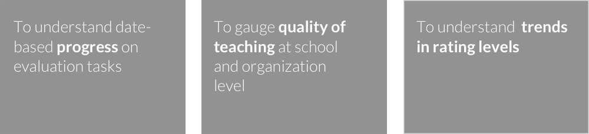
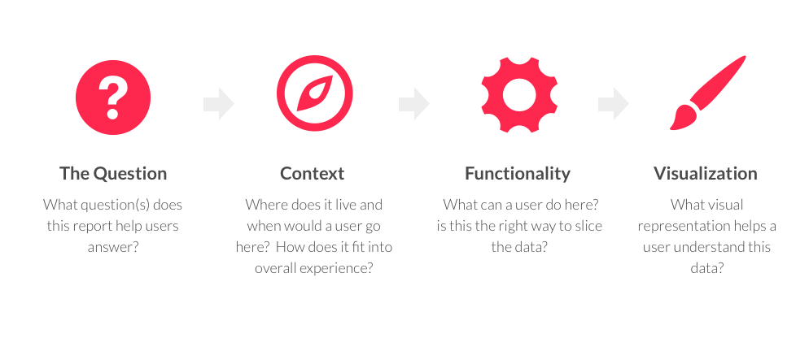
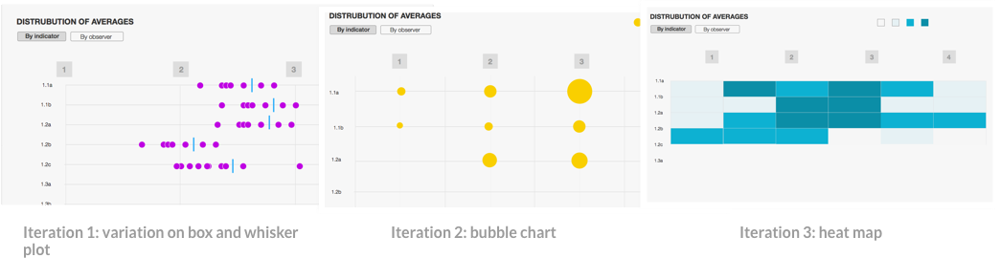
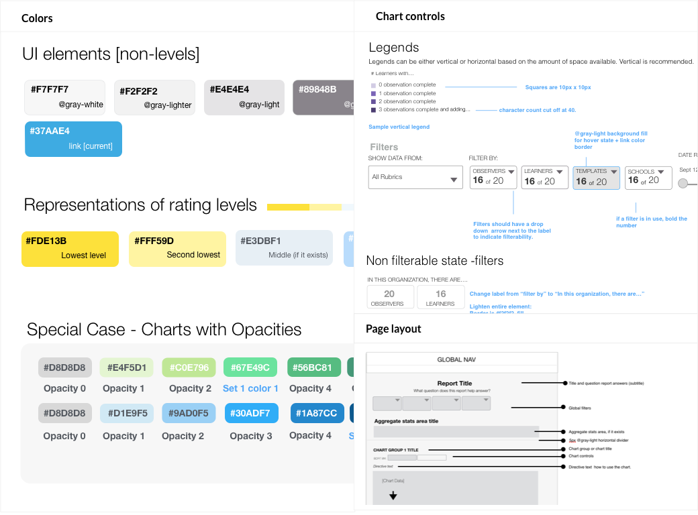

Task-based testing & user interviews provide guidance from old to new
With no tracking data on how users interacted with the old tableau reports, we first set out to understand what problems the reports actually needed to solve: What questions did our users want their data to answer? I led remote usability tests that combined task-based testing on the old reports with more foundational questions about the value of our data to our users, and was able to determine user needs for a reporting suite.
I synthesized notes from calls with 12 administrators and distilled their needs into three core areas for reports.

A frame for thinking about visualizations
I designed a four-question template to guide brainstorming for the three core areas while keeping our visualization efforts focused. The prototype engineer and I then worked together to understand the ways we could grab and manipulate the various data sources, which served as constraints as we worked quickly through wireframe designs.

Rapid iterative prototyping with real data
Once we had chosen the data manipulations that seemed to answer our users' questions, I worked closely with the prototype engineer to build out reports with real data, ensuring actual data wouldn’t break the designs. We then connected with users to confirm our reports were solving their needs, adjusting the visualizations and other UI elements as we uncovered usabilty problems and incorrect assumptions.
In the end, we discovered that the third report — the calibration report — was only a perceived need; ultimately, our users' underlying need was for a calibration tool, not a report.
.
A comprehensive approach to style
After we finalized report concepts, I defined reusable styles so that we could build new reports quickly and consistently in the future. The style guide codifies rules for shared typography, layouts, colors and interactive elements.

Dynamic, readable reports that users love
The end result was two dynamic, in-depth reports that greatly improved the way our users were able to understand and interact with their data. We received an email from one user who said simply,
“These reports are SOOOOOO much better!!”